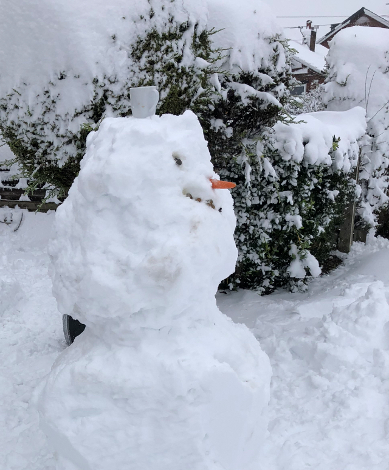

Monthnote December/Weeknote 06 January
December
To be fair, not much was achieved in December. I was mourning the loss of a relative, teams were slowing down as staff were taking time off, I managed to take two weeks holiday over New Years’.

January w/c 06 Jan
Feeling refreshed, enthused and inspired by being nominated as Club Runner of the Month, I’ve entered five running races in 2025 of increasing difficulty. This includes Leeds Marathon in May, a 30 Mile Ultra in June. It will be my first attempt at a 26.2 miles. So do expect a steady flow of updates about my progress towards those goals…
Arriving back at work Jan 6 was all a shock to the system… the school run, snow and ice, made travel very difficult. The running was fun, we managed Parkrun in -2 degrees and 5 mile icey training run…
Changes in the team
Ellen has now left the UCD team on promotion, which was great news and much deserved.
Ellen delivered huge number of impact projects for both UCD team, particularly around the UR and Accessibility lab. This does create more challenge for Ops team; we are down to 1.5 FTE headcount (from previous 5)… the number of projects and responsibilities has grown considerable over the last few years and months. So, apologies in advance if you don’t receive a timely reply… managing expectations here.
Reflecting on this, we know current resourcing model really isn’t sustainable at all and I’ve highlighted this to my manager, the wider leadership, in blog posts, etc.
Many teams are in a similar siutation. A few colleagues are convinced we can AI/automate our way out of staffing deficits, maybe achieve even more…? do we have a strategy for this? where are the tech/ai tools, training and funding to back it up?
John Quinn annouced he is leaving too - this will be a big loss to NHSE. John is the definition of an authentic leader. Something we need much more of, not less. Transparent - open about what they are doing, honest and reflective, leading with authority, while also empowering colleagues to act and to speak up… being realistic… about things that are going well and where improvements can be made, rooted in the world of people and their needs.
A week of kick-off meetings:
- First week back in, everyone still warming up to the idea of work, several new projects were launched
- Tools was the priority - kick off meetings to ensure we agreed plans, business cases and approvals are all being lined up, to ensure continuity of core tools that enable staff to do their jobs
- Small progress around UR Finder Azure/Powerapps environment set up… requests sent through to several approval teams. A couple of productive meetings.. although Azure AI and Copilot are not approved for use at NHSE, we are hoping to get involved in the planned pilot/trial scheduled for early 2025.
Best use of technology this week
Leeds City Council’s live map of gritted areas in Leeds. * https://www.leeds.gov.uk/parking-roads-and-travel/ice-and-snow-clearing * https://www.arcgis.com/apps/webappviewer/index.html?id=36dadbd9af924c71ab30240814eb1433
While the gritters didn’t come to our village for 48 hours, and our street wasn’t gritted at all, it’s helpful to know where has been gritted.
Why didn’t they come?
GRITTER PARTY IN SEACROFT
Hope you enjoyed the snow and ice too!